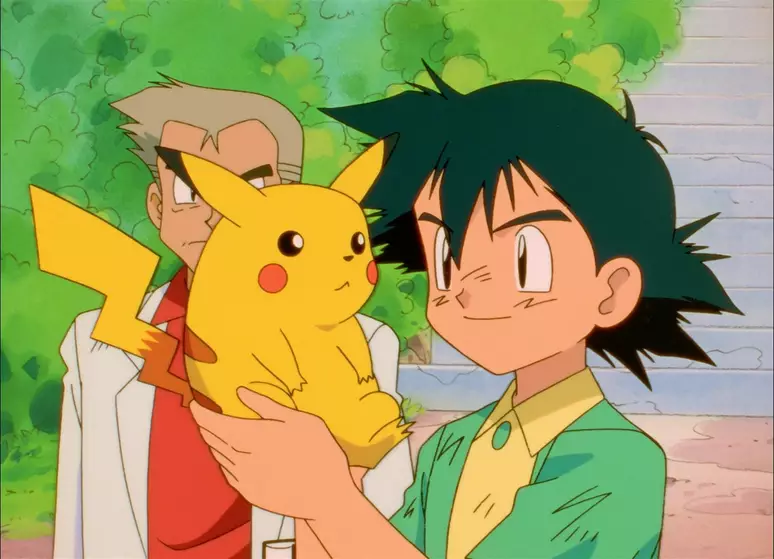

1 de abril de 1997
Ash e Pikachu se conhecem

O encontro desses dois acontece no primeiro episódio do anime, e seu relacionamento não foi dos mais fáceis, com Pikachu chocando Ash e recusando a obedecer os seus comandos. Tudo isso mudou quando Ash protegeu com a sua vida um Pikachu ferido em um ataque de um bando de Spearows no meio da floresta, gesto que deu força a Pikachu para defender os dois, e o resto é história. Esse foi o iníco de uma longa e bela amizade.